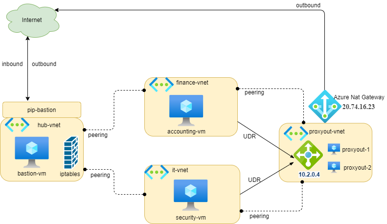
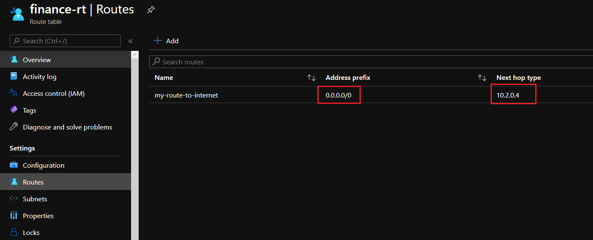
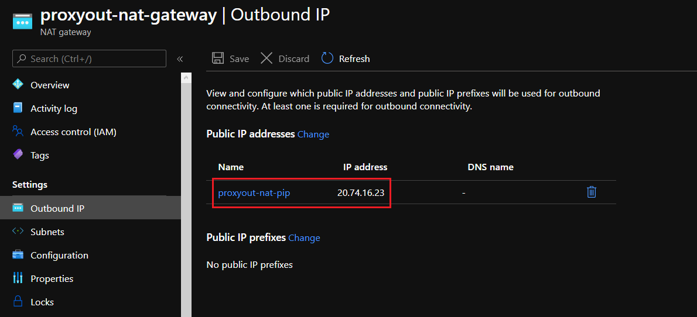
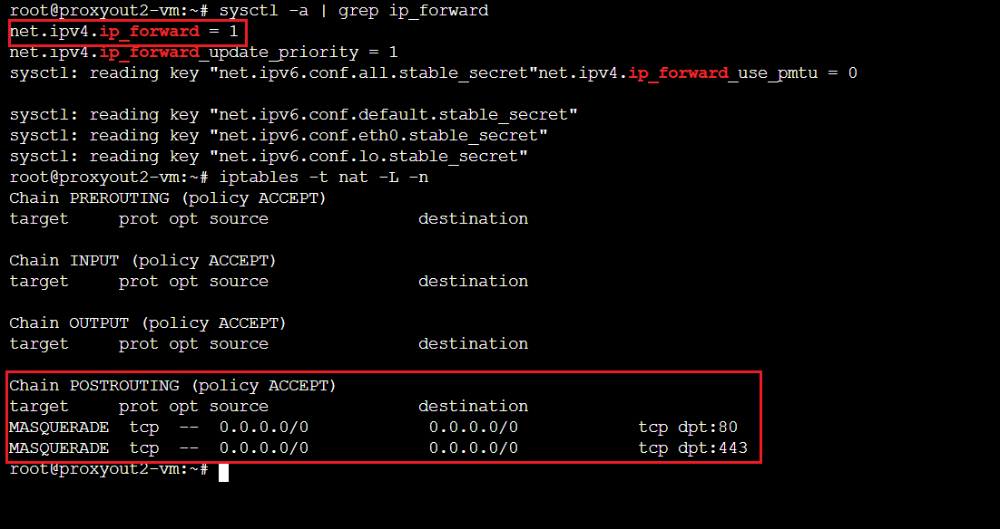
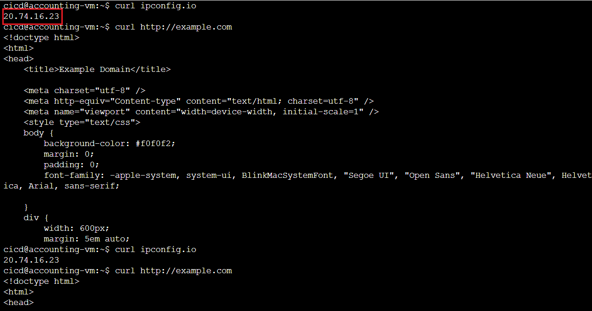
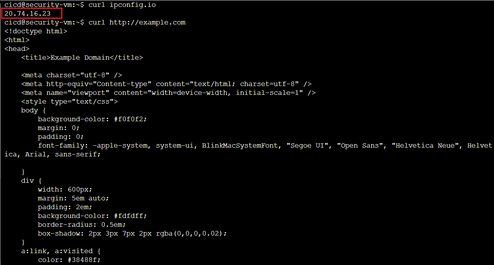
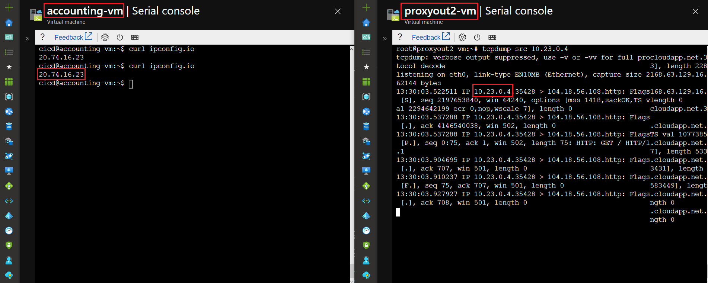

In contrast of Google Cloud Platform, Azure Virtual Machine has access to the Internet by default (even if your vm doesn’t have a public ip). You don’t need to do anything to have internet access.
But what if you would like to control the web traffic (http/https) to the internet from your virtual networks (due to the company’s policy for example). You may need to establish a single access point to the internet on which you could control the outbound access.
In the previous article, we discussed the Hub-Spoke Topology. We will expand this architecture to cover our topic today.
Our architecture modified:
As you saw in the previous architecture, we have three virtual networks:
- Hub virtual network (hub-vnet): region France Central
- Spoke 1 virtual network (finance-vnet): region West Europe
- Spoke 2 virtual network (it-vnet): region North Europe
We need to control the web traffic from all spoke networks to the Internet .
We will add a new virtual network:
- Proxyout virtual network (proxyout-vnet): region France Central
On this new virtual network, we place two virtual machines (proxyout) behind a Azure Load Balancer Standard to receive/control the web traffic (http/https) from other spoke networks. You could install a middleware (squid) to allow/deny the access.
So, our architecture will be the following:

Create proxyout load balancer
- Private IP address of Load Balancer: 10.2.0.4
Create proxyout virtual network & virtual machine
- Private IP address of proxyout1-vm: 10.2.0.5
- Private IP address of proxyout2-vm: 10.2.0.6
Create a routable for each spoke subnet
Now, the proxyout network is created. We could create a route on each spoke subnetwork to override the route by default to the internet passing to the lb of proxyout 10.2.0.4

Create a peering between proxyout vnet and each spoke vnet
Create a NAT Gateway

- Public IP assigned to NAT: 20.74.16.23
Enable IP Forwarding on proxyout instance and create a NAT rules
echo 1 | sudo tee /proc/sys/net/ipv4/ip_forward
sudo iptables -t nat -A POSTROUTING -p tcp --dport 80 -j MASQUERADE
sudo iptables -t nat -A POSTROUTING -p tcp --dport 443 -j MASQUERADE
Check:

Test connectivity to the Internet from finance subnet
Now, from the accounting-vm located on finance-subnet, run the below command:
curl ipconfig.io
curl http://example.com

Test connectivity to the Internet from it subnet
From the security-vm located on it-subnet, run the same command:
curl ipconfig.io
curl http://example.com

You may notice that our vm instances on different subnetworks use the same Public IP 20.74.16.23 of Nat Gateway and the web traffic flow to proxyout instances before going out to the Internet.

As you see, our proxyout instances are the central place where all web traffic from different networks coming before going out to the Internet. So you may think to install a middleware on these instances (squid for example) to allow/deny the traffic if needed.